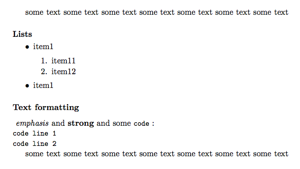

TeXDoclet
TeXDoclet is a Java doclet implementation that generates a LaTeX file from you Java code documentation.
The doclet is based on the doclet originally created by Greg Wonderly of C2 technologies Inc. and its revision by Soeren Caspersen of XO Software.
Example outputs
See the following example PDF documents which are generated by pdflatex from TeXDoclet LaTeX output :
- report document class example : TeXDoclet_report.pdf
- article document class example : TeXDoclet_article.pdf


{kind=link}
Download

TeXDoclet.jar
TeXDoclet.jar is all you need to create LaTeX file from your Java sources.
Latest version & Source Code
Github project site : http://github.com/doclet/texdoclet.
Instead of downloading the Java jar file you can also check out the latest TeXDoclet version by cloning the Git repository https://github.com/doclet/texdoclet.git
git clone https://github.com/doclet/texdoclet.git
And compile the TeXDoclet.jar with maven2 from the project root directory :
mvn clean install
This generates the TeXDoclet.jar file in the target/ subdirectory.
New - Markdown Support
TeXDoclet integrates now Txtmark - Java markdown processor.
Forget about to write your javadoc in HTML !
Just simply write Markdown syntax like this (and put it in a <PRE format="md"> HTML tag) :
<PRE format="md">
some text some text some text some text some text some text some text
##### Lists
- item1
1. item11
2. item12
- item1
##### Text formatting
_emphasis_ and __strong__ and some `code` :
code line 1
code line 2
some text some text some text some text some text some text some text
</PRE>
... and you will get the following pdflatex output :

Nothing could be simpler!
Usage
Generally a Java documentation is created with the javadoc tool (and its default doclet) that comes along with the Java JRE/JDK installation. To create a Java documentation with a doclet other than the default doclet you have to specify the doclet with the -docletpath and -doclet parameters of the javadoc tool :
javadoc -docletpath <path to doclet .jar file> -doclet <doclet class name>
According to this you have to set the path to the TeXDoclet.jar file and the class name org.stfm.texdoclet.TeXDoclet for the javadoc use with TeXDoclet doclet.
Assuming you have the following project structure :
<project root dir>
src
main
java
com
<subpackages and java code>
org
<subpackages and java code>
Then the following example javadoc execution builds Javadoc documentation (in out.tex) from Java sources located in src/main/java subdirectory for all packages starting with org and com :
javadoc -docletpath path/to/TeXDoclet.jar \
-doclet org.stfm.texdoclet.TeXDoclet \
-noindex \
-tree \
-hyperref \
-output out.tex \
-title "My Title" \
-author "My Name" \
-sourcepath src/main/java \
-subpackages org:com
Example javadoc calls
See createDocs.sh scripts in /examples subdirectory of the github project for more examples.
TeXDoclet output configuration
TeXDoclet doclet is configured by arguments passed to the doclet by the javadoc execution. There are a lot of defined parameters to affect the Latex document output. Print help to get a complete list of parameters you can pass to the TeXDoclet doclet :
Print help (TeXDoclet + javadoc help) :
javadoc -docletpath target/TeXDoclet.jar -doclet org.stfm.texdoclet.TeXDoclet
or (TeXDoclet help only) :
java -jar target/TeXDoclet.jar -h
-title <title> A title to use for the generated output document.
-subtitle <title> A subtitle for the output document. No -title will result in no title page.
-output <outfile> Specifies the output file to write to. If none specified, the default is docs.tex in the current directory.
-docclass <class> LaTeX2e document class, `report' is the default.
-doctype <type> LaTeX2e document style, `headings' is the default.
-classfilter <name> The name of a class implementing the ClassFilter interface.
-date <date string> The value to use for the document date.
-author <author> Specifies string to use for document Author.
-texinit <file> LaTeX2e statements included before \begin{document}.
-texsetup <file> LaTeX2e statements included after \begin{document} \maketitle (if title was specified).
-texintro <file> LaTeX2e statements included after table of contents
-texfinish <file> LaTeX2e statements included before \end{document}.
-texpackage <file> LaTeX2e statements included before packages' \chapter.
-setup <file> A setup file included before \begin{document}.
-twosided Print twosided.
-serial Do print Serializable information.
-nosummaries Do print summaries of fiels, constructors and methods.
-nofieldsummary Do not print field summaries
-noconstructorsummary Do not print constructor summaries
-noinherited Do not include inherited API information in output.
-shortinherited Prints a short inheritance, only the member name (not the whole signature)
-noindex Do not create index.
-tree Create a class tree.
-treeindent <float> Indent <float>cm i the class tree. Default is 1cm.
-hyperref Use the hyperref package.
-pdfhyperref Use the hyperref package with pdf. Overrides -hypertex.
-version Includes version-tags .
-hr Prints horizontal rows in the output (to get a better? view).
-include Creates output in two seperated latex documents: one for the preamble part and another for the actual java documentation content.
-sectionlevel <level> Specifies the highest level of sections (either "subsection", "section" or "chapter").
-imagespath Path to the texdoclet_images dir (absolute or relative to the output document .tex file).
-tablescale <factor> Scale factor to specify width of tables. Default value is 0.9.
How to use generated LaTeX documentation in your own document
If you want to use TeXDoclet output in your own LaTeX document, simply use option -include. Option -include produces two .tex files that you have to insert in your LaTeX document (for instance by using the \input{} LaTeX command) :
- TeXDoclet_preamble.tex : to include in the preamble part of your LaTeX document.
- TeXDoclet.tex : this is the actual java documentation content that you can place wherever you want between
\begin{document}and\end{document}in your LaTeX document.
See example 4 in the /examples/example4_include subdirectory of the github project for more info.
Previous versions
- The intitial project of Greg Wonderly is available here : http://java.net/projects/texdoclet.
- Its revision by Soeren Caspersen you find here : http://egee-jra1-integration.web.cern.ch/egee-jra1-integration/repository/texdoclet.